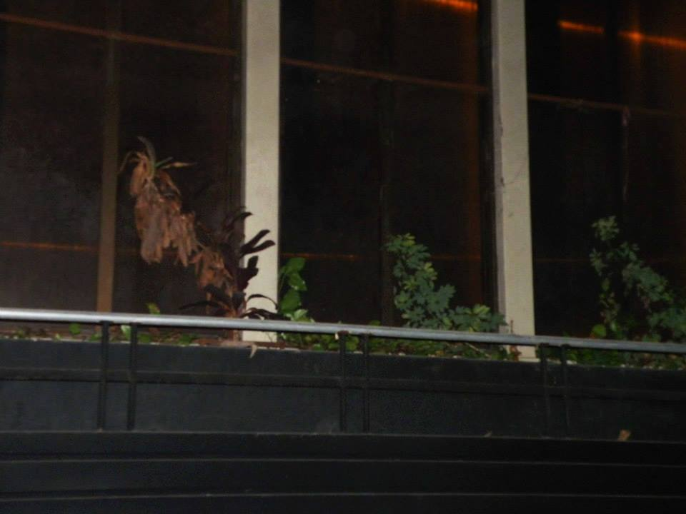

micaela pinalli
potze〰️
taller wav.wav.
daily
unikornio☆garage
d0mi🕳
Micaela Pinalli
(n. 1994, Buenos Aires, Argentina)
Muestras / Exhibiciones
·2025 - Daily Ediciones presentando copia 1, 2 y 3 en Tranza Festival, Club Aconcagua, La Plata, Argentina.
·2024 - BULLYING ︎ -Curaduría de Muestra Colectiva en Oficina,Piso 10 - Bs As, Argentina.
·2023 - Feria Navidad Dinosaurio - Deseo Zapatos - Bs As, Argentina.
·2023 - Stand de independientes Arteba Fundación - Bs As, Argentina.
·2023 - MIGRA Feria- Deseo Buenos Aires - Bs As, Argentina.
·2023 - Feria Ilusorio - Strummer Bar - Bs As, Argentina.
·2023 - Triatlón Feria - Exe Estudio - Bs As, Argentina.
·2022 - Ciclo Podrido - El Portal - Bs As, Argentina.
·2022 - Festival Circulo Imperfecto - Club Oeste - Bs As, Argentina.
·2022 - MIGRA Feria - Parque de la Estación - Bs As, Argentina.
·2021 - MIGRA Feria - La Otra Cosa Espacio Cultural- Bs As, Argentina.
·2021 - Tranza Festival - El Galpón - La Plata, Argentina.
·2020 - Selección de Yo la Tengo en Festival Rencontres Internacionales Paris Berlin- Auditorio del Museo del Louvre, Paris, Francia.
·2020 - MIGRA Feria - Espacio Qui - Bs As, Argentina
·2019 Exhibición de Yo La Tengo en XRAR, Festival Internacional de Cine Inmersivo y XR - Casa de la Cultura de Quilmes, Buenos Aires, Argentina
·2019 - Presentación de Defensa Civil en la Bienal de Diseño UBA Fanzinoteca FADU (UBA),Argentina
·2019 - Exhibición de Yo La Tengo en Virtuality Buenos Aires como parte de Encuentro VRI - Centro Cultural Kirchner, Bs As, Argentina
·2018 - Exhibición Yo La Tengo en MAGMA (muestra de proyectos audiovisuales en el marco de la cátedra Campos/Trilnick)- FADU (UBA),Argentina
·2017 - Presentación de Mundo Desechable en Convoi - Bs As, Argentina.
Te presento a mi mascota. Es un gato muy juguetón y le encanta dormir la siesta al sol.
